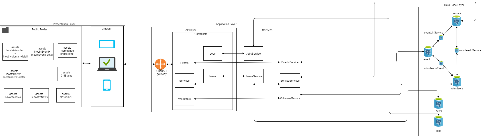
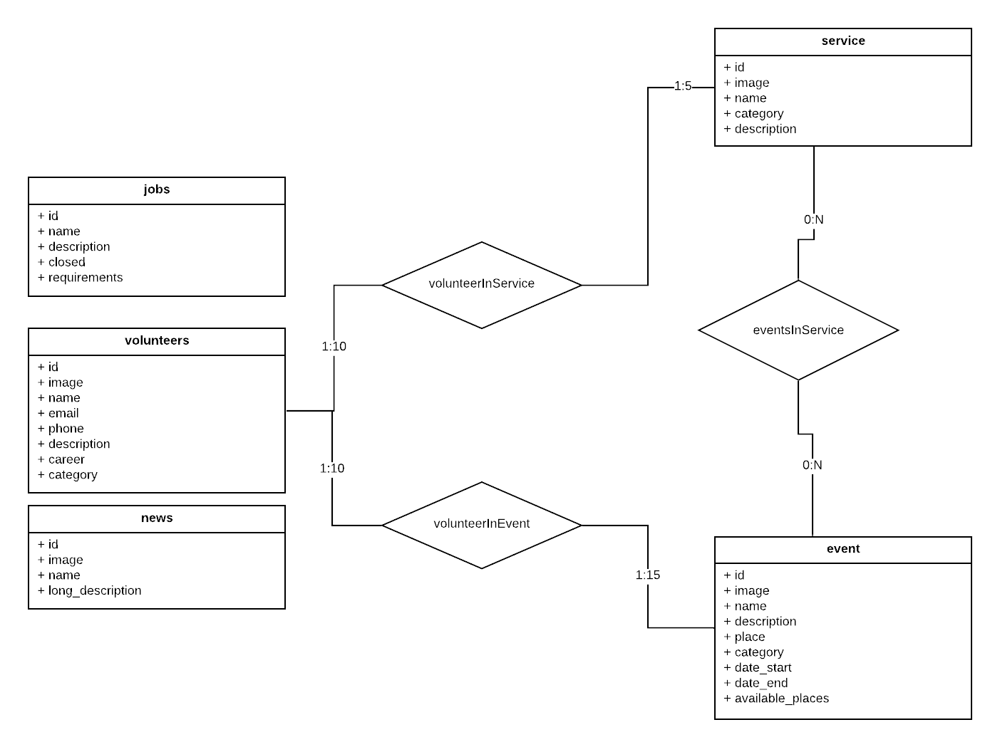

Deliverable D1
General group information
Member n. Role First name Last Name Matricola Email address 1 administrator Marco Premi 10526255 marco.premi@mail.polimi.it 2 member Fabrizio Siciliano 10522031 fabrizio.siciliano@mail.polimi.it 3 member Davide Clementi 10457819 davide2.clementi@mail.polimi.it Links to other deliverables
Deliverable D0: the web application is accessible at this address. Deliverable D2: the YAML file containing the specification of the app API can be found at this address. Deliverable D3: the SwaggerUI page of the same API is available at this address. Deliverable D4: the source code of D0 is available as a zip file at this address. Deliverable D5: the address of the online source control repository is available this address. We hereby declare that this is a private repository and, upon request, we will give access to the instructors. Specification
Web Architecture
 Nel diagramma riportato qui sopra abbiamo cercato di rappresentrare la suddivisione delle diverse componenti, comprese le interazioni (rappresentate tramite frecce bidirezionali), tra le macroaree principali presentation, application e data layer. I collegamenti tra i singoli assets e il browser all'interno del presentation layer non sono stati inclusi e per semplicità di rappresentazione è stato adoperato un singolo collegamento tra il browser e la cartella comprendente il gruppo di assets statici(file html, css,js e jpg). All'interno del diagramma non vi è inoltre una suddivisione dei collegamenti tra l'openAPI gateway e i singoli service, in realtà ci sarebbe un collegamento per ognuno di essi con il gateway. Tuttavia per semplicità di rappresentazione è stato indicato un singolo collegamento tra l'openAPI gateway ed il gruppo di Service. Nello sviluppo del nostro sito abbiamo deciso di considerare alcune pagine che non necessitano dell'interazione con il database (data layer), ma che risiedono soltanto all'interno del presentation layer, in quanto le informazioni che vi sono contenute sono soggette a poche modifiche nel tempo e non richiedono perciò un caricamento da database. Queste pagine sono:HomePage Chi Siamo Raggiungici Sostienici Contattaci Le informazioni relative a queste pagine, nel diagramma, sono state rappresentate all'interno di una cartella, per rimanere coerenti con le suddivisioni che abbiamo fatto anche nella fase di implementazione del sito. Le informazioni relative invece alle pagine che necessitano un caricamento di informazioni sono state salvate all'interno del Database (data layer). Le informazioni contenute in queste pagine possono infatti cambiare e dover essere aggiornate nel tempo, in quanto possono aggiungersi o cancellarsi o dare una nuova versione di alcuni contenuti. Le pagine che appartengono all'application e presentation layer ma che necessitano di un'interazione con il data layer sono:Le nostre News I nostri volontari (con l'aggiunta delle pagine dettagliate dei volontari singoli) I nostri eventi (con l' aggiunta delle pagine dettagliate dei singoli eventi) I nostri servizi (con l' aggiunta delle pagine dettagliate dei singoli servizi) Lavora con noi API
REST compliance
Durante lo svilluppo del sito ci siamo rifatti ai principi dell' architettura client-server REST. Abbiamo cercato infatti di separare gli elementi client che non richiedono collegamenti diretti con il database dal server che invece si interfaccia con il database. Il server non salva nessuna informazione del client, ma ad ogni richiesta si connette a database e risponde con i dati richiesti. Il client fa caching di alcune informazioni per aumentare le performance. Sempre seguendo l'architettura REST abbiamo implementato un layering system in quanto il server è l'unico a "vedere" sia il client che il database; il database "vede" solo il server, come anche il client.OpenAPI Resource models
Nella nostra applicazione abbiamo cercato di rifarci al Richardson maturity model. Di questo modello abbiamo applicato il livello 2, in quanto questo ci permetti di definire le GET come delle operazioni sicure che non producono alcun cambiamento significativo nello stato della sessione. Questo permetti quindi di effettuare diverse volte tale operazione e ottenere ogni volta lo stesso risultato.Data model
 All'interno del data layer, durante la creazione delle tabelle, abbiamo cercato di rimanere coerenti con l' ER rappresentato all' interno del documento di design, cercando quindi di rispettare i nomi assegnati. A ciascuna di queste pagine è stata associata una tabella a Database:jobs news voluteers event service Le tabelle ponte mostrate a livello di logical Design sono utilizzate per rappresentare le associazioni 0(1):N. Nell'ER tali tabelle sono indicate come relazioni e in quanto presenti nel diagramma sono state rappresentate coerentemente anche a livello di Database. Il mapping con le OpenApi è stato fatto rispettando le tabelle e gli attributi contenuti al loro interno, rispettandone quanto più possibile anche la nomenclatura. Assegnando quindi a ciascuna tabella del database una corrispondenza con il relativo component chiamato con il medesimo nome.Implementation
Tools used
Per l'implementazione del backend abbiamo utilizzato interfaccia standard le OAS 3.0 per avere una documentazione e un templating per il server. Il server si sviluppa sulla libreria open source di NodeJS (svilluppata su Javascript) interfacciandosi con il database PostgreSQL hostato sulla piattaforma Heroku. Per la costruzione del database ci siamo avvalsi del tool pgAdmin 4.Discussion
Abbiamo testato gli endpoints delle API tramite l'utilizzo del tool Postman, di mettiamo qui di seguito la collection ed i risultati. Collection Risultati Abbiamo inoltre deciso di testare in modo più semplice le openAPI tramite l' utilizzo diretto dell' URL, verificando che le risposte caricate, a seguito delle query, siano coerenti con quanto scritto sul documento yaml, verificando cioè che i dati caricati siano gli stessi.La nostra applicazione web rispetta le pratiche comuni relative alla partizione del sito e alla conseguente suddivisione delle pagine che fanno riferimento ad uno static assets e altre che basano la loro logica sull'application data, al cui interno bisogna considerare la suddivisione in openAPI gateway, controller e service. L' applicazione considera infatti i dati relativi ad alcune pagine soggetti a variazione nel tempo e di conseguenza l' utilizzo di un' application server risulta essere necessario per poter interfacciarsi e interrogare il database. Nel restante caso i dati che non necessitano di query specifiche a database sono stati considerati come static assets. Abbiamo considerato opportuna ed efficace questa soluzione per rendere più performante il caricamento delle pagine. Nella nostra applicazione non abbiamo ritenuto strettamente necessario l' utilizzo di una sezione di login in quanto tutti i contatti vengono esposti nel sito e una sezione dedicata all' autenticazione dell' utente l' abbiamo considerata poco coerente con ciò che siamo andati a sviluppare. Le API che sono state implementate sono delle GET da Database che hanno lo scopo di creare dei modelli per le funzioni, implementate successivamente da backend, per caricare le informazioni contenute all' interno DB. Tutto lo sviluppo, testing e debugging è stato effettuato solo ed esclusivamente su browser Chrome. Questo ha fatto sorgere l'unico "bug" minore dovuto alla libreria utilizzata di Shuffle.js. Questa crea dei conflitti nel momento in cui, utilizzando i developer tools, si tenta di cambiare la grandezza del viewport (per esempio da 1400 a 400 o viceversa). Facendo questo, la libreria non riesce correttamente a fare il resize delle card, le quali rimangono con le grandezze della width di partenza, costringendo un reload forzato della pagina. La tipologia di database utilizzata nello sviluppo del sito è postgress, un object-relational database. Le strutture utilizzate per il salvataggio dei dati sono infatti delle tabelle in cui la prima riga comprende i nomi dati agli attributi dei singoli oggetti. Le righe successive alla prima rappresentano i dati veri e propri che, in quanto tali, sono caratterizzati da una chiave primaria. Sono state aggiunte inoltre delle chiavi esterne per tenere conto dei collegamenti che sono presenti nelle tabelle ponte (Service->Events, Events->Service, Volunteer->Events, Events->Volunteer, Volunteer->Service e Service->Volunteer)Other information
Task assignment
Nella suddivisione del lavoro per lo sviluppo del sito abbiamo cercato di organizzarci per lavorare insieme per la maggior parte del tempo, cercando di dividere il lavoro affinchè tutti potessero contribuire alle parti più importanti del progetto e avessero la possibilità di imparare i passaggi implementativi più importanti. Il lavoro è stato diviso in maniera tale che tutto il gruppo potesse inizialmente concentrarsi sul frontend per ottenerne una versione stabile e solo successivamente dedicarsi al backend.Analysis of existing API
Per quanto riguarda lo sviluppo delle API non abbiamo ritenuto necessario prendere come riferimento delle API già esistenti. Le openAPI sono state sviluppate semplicemente consultando la documentazione disponibile su swagger. In quanto le API necessarie per il nostro sito sono solo delle semplici chiamate a database per ottenere come risposta i dati contenuti, non vi è infatti alcuna necessità per il client di aggiornare/inserire delle informazioni a database.Learning outcome
Davide ha imparato l'utilizzo di bootstrap per lo sviluppo del frontend e di Javascript ed è interessatto ad approfondire maggiormente le proprie conoscenze per quanto riguarda l'utilizzo del framework AngularJS.
Marco ha imparato a gestire il database e a realizzare le query per l'estrapolazione delle informazioni del nostro sito. E' interessato ad integrare le proprie conoscenze per quanto riguardo la gestione di database non relazionali focalizzandosi su MongoDB.
Fabrizio ha imparato a gestire la piattoforma cloud di heroku e ad integrarla con il database ed il backend del nostro sito. Ha inoltre intenzione di approfondire le proprie conoscenze nell'ambito cloud studiando il funzionamento anche di AWS.